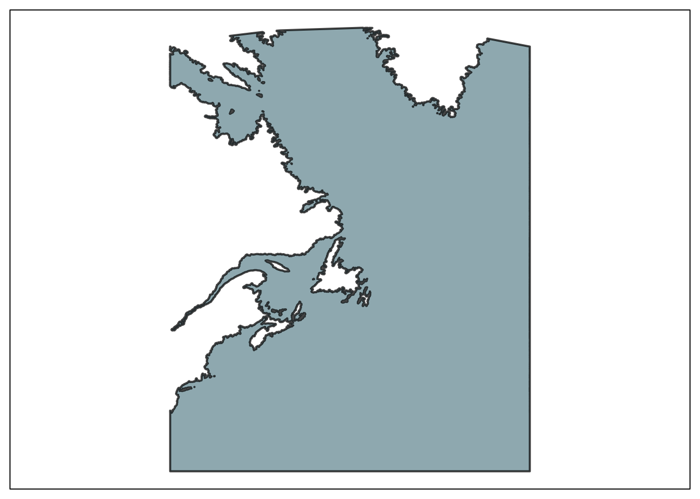

Mapping threats at sea to marine birds throughout their annual cycle to inform conservation and management in Atlantic Canada
Progress report
Canadian Wildlife Service
1 Introduction
1.1 Background
The Migratory Birds Regulations, under the Migratory Birds Convention Act, 1994, strictly prohibit the harming of migratory birds; however coastal and marine birds are subject to injury and death in Canada due to multiple threats in the marine environment. Under the Ocean Protection Plan (OPP) and the Marine Spatial Planning (MSP) initiatives, ECCC is coordinating efforts to improve information on the spatiotemporal distribution and overlap of coastal and marine birds with threats at sea, such as potential oil spills from industrial infrastructure and marine traffic. The OPP initiative specifically supports the collation and generation of scientific data and knowledge products for integration into marine response plans, the effectiveness of which will be greatly increased if cumulative effects of all known stressors are considered.
Of the wide range of coastal and marine bird species which breed and forage in the waters around the Atlantic Provinces, many migrate long distances to their overwintering areas so are exposed to additional threats beyond Canada’s jurisdiction, adding to the complexity of understanding cumulative effects on species for which Canada has conservation and stewardship responsibility. For example, Canada hosts >90% of the Atlantic-basin breeding population of the globally threatened Leach’s Storm-Petrel (listed as threatened by Committee on the Status of Endangered Wildlife in Canada) which regularly forage beyond the Exclusive Economic Zone and migrate as far as the waters off southern Africa. With foresight to the development of a Recovery Strategy for this species and in support of OPP and MSP initiatives, ECCC is currently leading a study to better understand habitat use and overlap with anthropogenic threats for this species throughout the annual cycle.
Of particular interest is improving understanding of the nature (if, when, how) and consequences of seabird interactions with offshore vessel traffic and the offshore oil and gas industry. Seabird interactions with offshore oil and gas platforms is a long-standing issue in the Newfoundland and Labrador and Nova Scotia offshore. In a 2012 Auditor General report (Commissioner of the Environment and Sustainable Development (CESD) 2012) it was noted “Exhibit 1.5. The effects of offshore projects on seabirds need to be better understood”. Within the OPP, ECCC is responsible for informing preparedness, planning and response with respect to migratory birds which requires an understanding of the where and when marine birds are most at risk to threats like oil pollution, vessel traffic, and light pollution.
This contract will develop spatial-temporal risk layers relevant to seabird conservation within Canada’s EEZ and abroad. Specifically, this work will develop threats layers related to oil pollution, oil and gas infrastructure, vessel traffic, and light pollution.
1.2 Objective & scope
The general objective of this contract is to generate geospatial data layers quantifying threats to marine birds at sea throughout the annual cycle to inform conservation and management in Atlantic Canada.
To move forward with conservation and management of marine birds in Atlantic Canada in the face of increasing industrial and shipping activity at sea, we were tasked to acquire and format spatiotemporal datasets and conduct analyses to generate geospatial data products quantifying threats at sea throughout the annual cycle of migratory marine birds. We are responsible for the data management, quantitative analyses, and reporting – including reproducible workflows (which details methods/approach and includes R code).
1.2.1 Specific tasks
The following is the list of specific tasks, as described in the Statement of Work:
- Source and format data required to generate threat layers for Task 2. The proponent will acquire datasets required for the analyses in Task 2, documenting reproducible workflows whenever possible. Work must be completed by 31 March 2024*.
- Generate oiling and vessel disturbance threat layers. The proponent will format and analyze spatiotemporal data to produce oiling and vessel disturbance threat layers as indicated in Table 1, Task 2, documenting reproducible workflows. Work must be completed by 31 March 2024*.
- Source data required to generate threat layers for Task 4. The proponent will assess and acquire the following datasets required for the analyses in Task 4, documenting reproducible workflows whenever possible. Work must be completed by 31 July 2024*.
- Generate light-based threat layers. The proponent will format and analyze spatiotemporal data to produce light attraction threat layers as indicated in Table 1, Task 4, documenting reproducible workflows. Work must be completed by 31 July 2024*.
- The proponent will not be held responsible for timely delivery of a given task if the data required to complete that task are not delivered to them in a timely manner – provided the proponent requested data access/delivery during Year 1 of the contract and requested a status update on the request at least once.
1.2.2 Progress report
The current report covers the work that was to be accomplished before March 31st, 2024. More specifically, Tasks 1 and 2 were to be completed at this stage of the project which targetted shipping-based pollution and petroleum pollution based on past incidents. The following sections presents the progress accomplished since the beginning of the contract, detailed justifications if the work tasked is not yet completed, and a description of the work accomplished.
1.3 Area of interest
The project is conducted in EEZ of eastern Canada and covers the St. Lawrence, the western Atlantic and adjacent International Waters. As currently defined, the study area covers 4924342 \(km^2\) (Figure 1.1). All threat layers are integrated in a study grid that divides the study area into a regular grid formed of cells of ~1 \(km^2\), although this decision can be revisited at any time throughout the project.
1.4 Data management and reproducibility
The aim of database management is to ensure the transparency and reproducibility of the project. Our approach is based on the FAIR (Findable, Accessible, Interoperable, Reusable) data principles, which seek to ensure that the data used are discoverable, accessible, interoperable and reusable. We therefore use programming tools, in particular the language R1. There are a number of advantages to using programming tools such as ArcGIS2. They offer great flexibility, enabling us to very quickly integrate changes or new considerations without having to redo a number of steps in a complex process. This flexibility is not limited to analysis, since all steps of a project, from the integration of raw data to the production of reports, can be integrated and easily modified. It is then an easy matter to integrate comments or new recommendations arising from engagement processes, for example.
We also use GitHub3, a version control tool for the documentation, quality control, and development/change history of programming elements relevant to the entire project. We created a publicly available research compendium called ceacws that provides the collection of all parts of our research project including text, figures, data, and code that ensures reproducibility of the study.
While not including the data directly, the research compendium contains all the resources making it possible to access and transform the raw data and prepare the threat layers for this project. It also contains – or will contain – the code creating figures, tables and this report. Only sensitive data for which confidentiality agreements have been signed remain inaccessible; still, these are stored on Google Cloud Storage in a secure bucket that can be accessed programmatically with an access key. This ensures that the whole project remains fully reproducible even if access to some data is limited.
The research compendium relies on another R package called pipedat, which provides analytical pipelines to access, load, and format a variety of data from multiple sources programmatically. The goal of pipedat is to enhance the capacity scientists, planners and the wider public to prepare and perform complex and reproducible ecosystem-scale assessments requiring the integration of multiple spatial datasets such as cumulative effects assessments in the context of ecosystem-based management, and Marxan analyses for the establishment of individual and networks of MPAs. While the analytical pipelines used to fetch and format the data for this project are available in this research compendium, their latest version and execution are performed with pipedat.
1.5 Notes & references
R is a free software environment for statistics, data science and graphics (https://www.r-project.org/)↩︎
ArcGIS is a geographic information software (GIS) suite developed by the US company Esri (https://www.arcgis.com/index.html)↩︎
GitHub is a web-based software development hosting and management service with over 40 million users worldwide (https://github.com/).↩︎